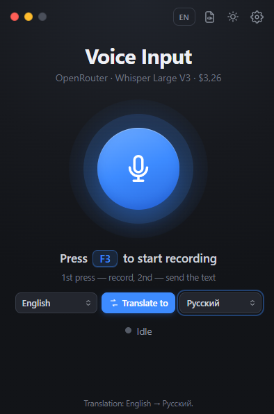

Voice typing and translator for Windows
Press F3, speak, press F3 again — and the text is pasted where your cursor is: a chat, Notepad, a browser, Word. With punctuation.
Version 1.7 · free and open source (MIT) · ~75 MB · Windows 10/11 x64

What it can do
Simple: one key, and the text goes where you need it.
Offline on your PC
Whisper (whisper.cpp) and Sber’s GigaAM run locally: free, no internet, your voice never leaves the computer. GigaAM adds punctuation and recognizes a Russian phrase in a fraction of a second; Whisper has NVIDIA GPU acceleration.
Or in the cloud
OpenRouter speech models from $0.012 per hour of audio. The app shows the price of each model and your balance.
Works around antivirus
If a corporate antivirus (e.g. Kaspersky) blocks the microphone for programs, record through your regular browser tab.
Audio and video files
Turn MP3, WAV, M4A, MP4, MKV and other files into a .txt transcript and .srt subtitles.
Translator
Speak one language, get text in another: the “Translate to” button on the main screen. English via Whisper, 35 more languages via OpenRouter.
Types as you speak
With the GigaAM model each phrase is pasted right after a short pause — no need to wait for the end of the recording. Lives in the tray, works on Windows 10 without Win+H.
Screenshots
The main window and settings, light and dark themes.


Install in 2 minutes
No installer, no account. Unpack and run.
- Download VoiceDictate-win-x64.zip and unpack it to a folder with Latin letters only, e.g.
C:\VoiceDictate. - Run VoiceDictate.exe. If Windows shows “Windows protected your PC”, click “More info” → “Run anyway” (the app is not code-signed).
- Open Settings (gear icon) and choose where to recognize speech: on your computer — click “Download” for the model (190 MB, once; for Russian speech, GigaAM v3, 220 MB, is better), or OpenRouter — paste your API key.
- Set the speech language, click into any text field, press F3, speak, press F3 again.
Cloud prices
Price for 1 hour of audio via OpenRouter, November 2026. Local recognition is free.
| Model | 1 hour |
|---|---|
| Whisper Large V3 Turbo | $0.012 |
| Whisper Large V3 | $0.027 |
| Voxtral Mini 3B | $0.06 |
| MAI-Transcribe 2 | $0.10 |
| Scribe v2 | $0.22 |
| GPT Transcribe | $0.27 |
The app loads current prices from OpenRouter itself.
FAQ
Is it free?
Yes. The program is free and open source (MIT). Local recognition with Whisper costs nothing. Only the optional OpenRouter cloud is paid, from your own OpenRouter balance.
Does it work offline?
Yes, with “On this computer” recognition using a Whisper or GigaAM model. The model is downloaded once (190–550 MB).
What is GigaAM and how is it better than Whisper?
GigaAM v3 is an open Russian speech recognition model by Sber (MIT license). On an ordinary CPU it recognizes a phrase in a fraction of a second, adds punctuation by itself and can paste text phrase by phrase while you are still recording. It understands Russian only: for other languages, built-in translation into English and file transcription the program uses Whisper.
The volume bar does not move — what to do?
Check Windows Settings → Privacy → Microphone. If a corporate antivirus blocks the microphone, choose “Audio capture: via browser” in the settings.
Which Windows versions are supported?
Windows 10 and Windows 11, 64-bit.